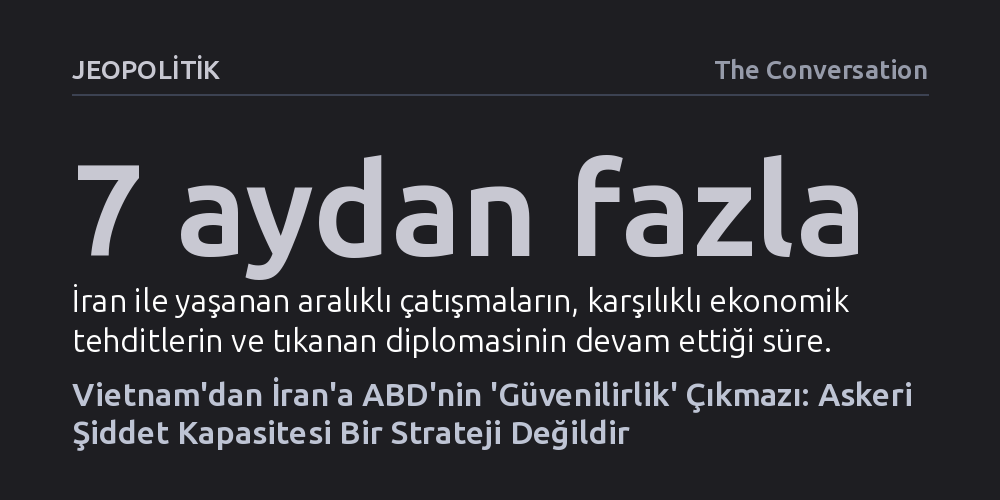

JEOPOLITIK · The Conversation · 2026-10-10
ABD'nin dış politikada 'stratejik güvenilirlik' arayışı, somut hedefler yerine prestij kaygısıyla askeri şiddet uygulama refleksine dönüşüyor. Vietnam'dan İran krizine uzanan bu yaklaşım, askeri güç gösterisini strateji sanarak ülkeyi sonu gelmeyen çatışmalara sürüklüyor.
Bir süper gücün caydırıcılık adına savaşa girmesinin arkasında rasyonel bir ulusal çıkar değil, zayıf görünme korkusu ve prestij saplantısının yattığını gösterir.

Aylardır süren hava saldırıları, karşılıklı ekonomik tehditler, tıkanan diplomasi ve tutulamayan ateşkes sözleri arasında ABD'nin uluslararası konumu yeniden tartışmaya açıldı. İran ile tırmanan gerilimde Washington yönetiminin attığı adımlar, dış politika çevrelerinde alışıldık bir kavramı bir kez daha gündemin merkezine taşıdı: Stratejik güvenilirlik. Kimi yorumcular yapılan bombardımanların hasımlara karşı caydırıcılığı ve kararlılığı kanıtlayarak Amerikan güvenilirliğini pekiştirdiğini savunurken, diğerleri somut bir gerekçeden yoksun saldırıların ve bir türlü sonuca ulaşamayan barış vaatlerinin ülkenin inandırıcılığını tükettiğini öne sürüyor.
Fakat bu kutuplaşmanın ötesinde, tartışmanın tam göbeğinde duran kavramın kendisi derin bir kafa karışıklığını barındırıyor. Teknik ve diplomatik anlamıyla güvenilirlik, bir devletin verdiği sözleri tutması, tehditlerini hayata geçirmesi ve taahhütlerini yerine getireceğine dair duyulan inançtır. Müttefiklerin de hasımların da bir sonraki hamlede söylenenlerin yapılacağına inanması beklenir. Oysa Amerikan dış politika pratiğinde güvenilirlik, basit bir söz tutma meselesinin çok ötesine geçerek bambaşka bir anlam dünyasına kilitlenmiş durumda.
Güvenilirlik, yalnızca karşı tarafa caydırıcı sinyaller göndermekle sınırlı teknik bir denklem değildir; muhatapların bu sinyalleri nasıl algıladığıyla ve bunu şekillendiren stratejik kültürle doğrudan bağlantılıdır. Karar alıcılar bir ülkenin güvenilirliğinden söz ederken aslında sadece askeri cephaneliği değil, o ülkenin değerlerine ve gücüne dair soyut kabulleri de masaya yatırırlar. Amerikan karar alma mekanizmasında güvenilirlik, zamanla rasyonel bir dış politika aracı olmaktan çıkarak, ABD öncülüğündeki dünya düzeninin üstünlüğüne ve sarsılmazlığına dair kolektif bir kaygının simgesi haline gelmiştir.
Diplomatik tarihçilerin de uzun süredir dikkat çektiği üzere güvenilirlik, somut ve ölçülebilir bir veri gibi sunulsa da pratikte neredeyse tamamen Amerikan prestijinin yerine geçen sembolik bir perdeye dönüşmüştür. Buradaki asıl korku, verilen bir sözün teknik olarak yerine getirilememesi değildir. Asıl endişe, 'özgür dünyanın lideri' sayılan bir gücün, Batı dışı ve teknolojik olarak daha zayıf kabul edilen bir rakip karşısında üstünlük sağlayamaması veya geri adım atmak zorunda kalmasıdır. Masada olan şey ulusal çıkarlardan ziyade, Batı merkezli dünya düzeninin ve Amerikan özsaygısının dokunulmazlık iddiasıdır.
Bu saplantının en yıkıcı tarihsel örneği Vietnam Savaşı'nda yaşandı. Yüzeysel bakıldığında Vietnam, Soğuk Savaş'ın ana cephelerinden biri değildi ve ABD için doğrudan hayati jeopolitik bir değer taşımıyordu. Buna rağmen dönemin karar alıcıları, Amerikan güvenilirliğinin tam da orada kanıtlanması gerektiği konusunda amansız bir ısrar sergiledi. Dışişleri Bakanı John Foster Dulles 1954'te Asya'daki komünist yayılmanın tüm hür dünya için büyük bir tehdit oluşturduğunu ve kararlılık göstermenin ilerideki daha büyük tehlikeleri önleyeceğini savunurken; ulusal güvenlik danışmanı McGeorge Bundy de ülkenin uluslararası prestijinin bütünüyle Vietnam'a bağlandığını ileri sürüyordu.
Ne var ki güvenilirliği koruma gerekçesiyle girilen bu savaş, tam aksine ABD'nin küresel inandırıcılığını yerle bir etti. Saygon'daki elçilik çatısından kalkan tahliye helikopterleri, geride bırakılan müttefiklerle birlikte yalnızca bir savaşın kaybını değil; Amerikan gücünün sınırlarını tüm dünyaya gösterdi. Bu hezimet, ekonomik krizler ve kurumlara güvensizlikle anılan 'Kırılma Çağı'nı derinleştirmekle kalmadı, Amerikan kamuoyunun geniş çaplı askeri müdahalelere duyduğu derin isteksizliği niteleyen 'Vietnam Sendromu'nu doğurdu. Güvenilirlik arayışı, paradoksal biçimde güvenilirliğin en ağır darbeyi almasıyla sonuçlandı.
Vietnam'da alınan yara, sonraki on yıllar boyunca Latin Amerika'dan Orta Doğu'ya kadar tüm dış müdahalelerde iki yönlü bir işleve sahip oldu: Hem kibrin ve aceleci müdahaleciliğin tehlikelerine karşı bir uyarı hem de zayıf görünmeme adına askeri eylemle güvenilirliği yeniden kurma bahanesi. Bugün İran karşısında yürütülen askeri hat da aynı kısırdöngüyü yansıtıyor. Hürmüz Boğazı'nın aralıklarla kapanması ve durmaksızın yinelenen hava vuruşları, somut bir nihai strateji olmaksızın sadece 'güvenilir görünme' dürtüsüyle hareket etmenin çıkmazını açıkça sergiliyor.
Washington ve Tahran yönetimlerinin üzerinde hemfikir olduğu tek bir gerçeklik var: Amerika Birleşik Devletleri'nin muazzam bir yıkıcı şiddet uygulama kabiliyetine sahip olduğu tartışmasızdır. Ancak Vietnam'da olduğu gibi bugün de temel yanılgı şudur: Güvenilir biçimde savaş açabilmek ve şiddet uygulayabilmek, bir stratejinin ikamesi olamaz. Sadece askeri eyleme geçebileceğini kanıtlamak, kararlı bir hasmı teslim almaya yetmediği gibi; korunması hedeflenen küresel prestiji ve gücü yavaş yavaş aşındıran, sonu gelmez bir çatışma sarmalına kapı aralamaktadır.